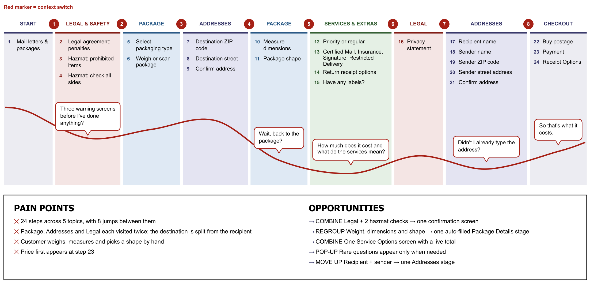
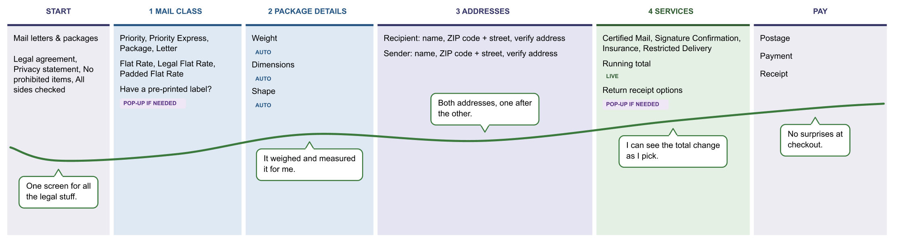
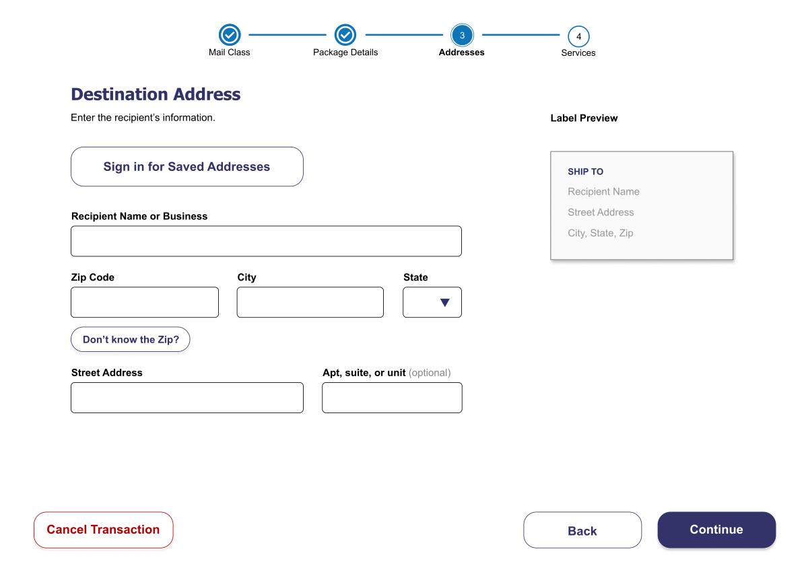
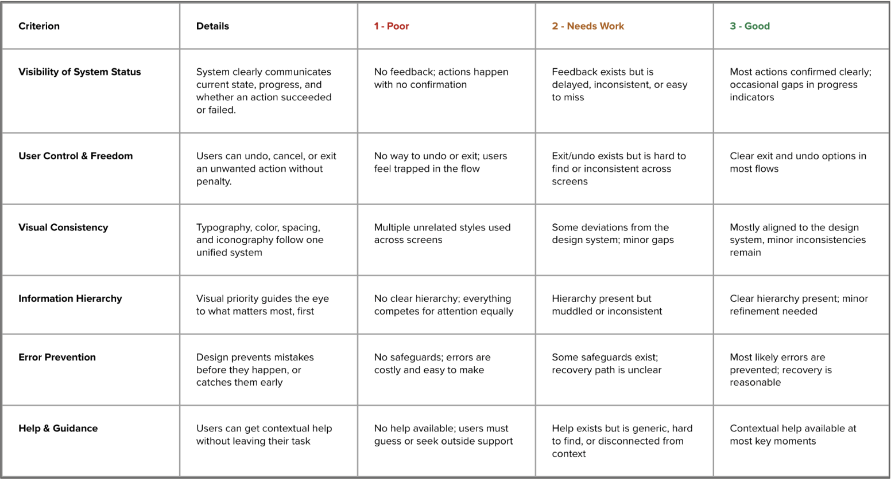
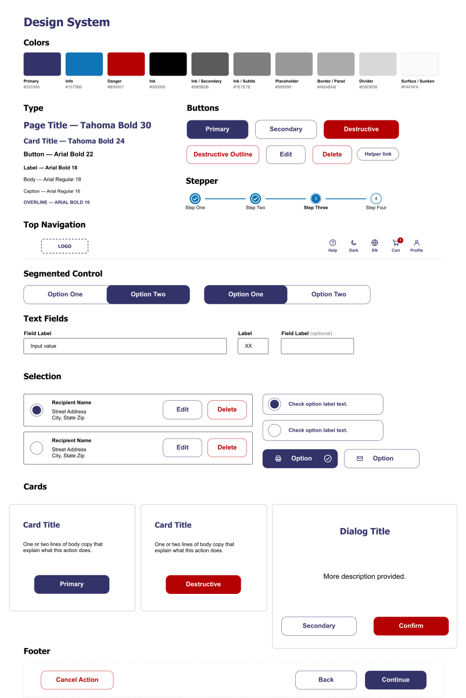
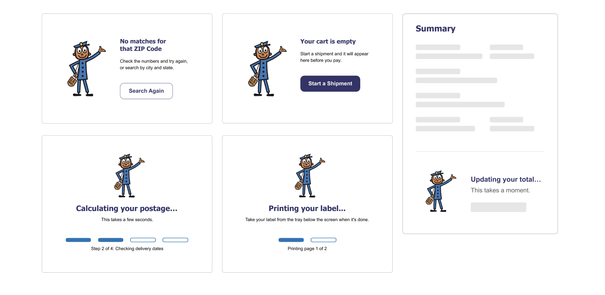
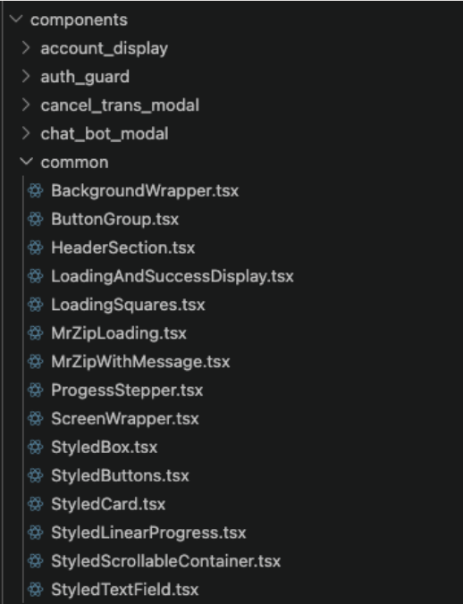
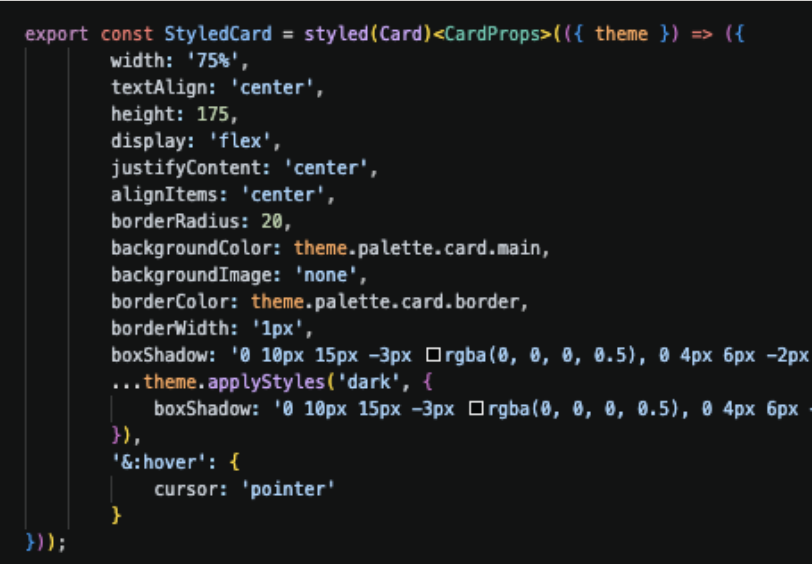
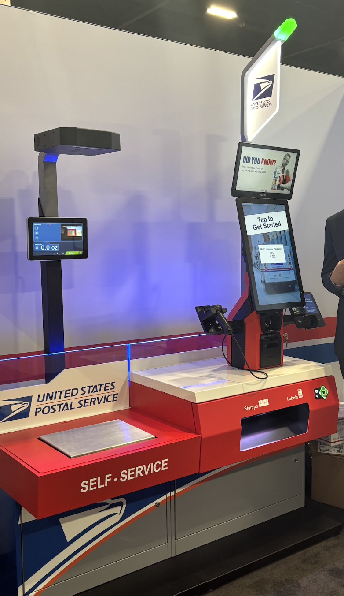

United States Postal Service
Shipping a package at a USPS self-service kiosk took 10+ minutes. I led the redesign of the kiosk's transaction flow as USPS rolled out new AI features. Three decisions drove the results: collapsing 25+ screens into 4 stages, fixing address entry bottleneck, and letting customers suspend or void a transaction instead of abandoning it.
problem
A kiosk isn't a website people browse at home. Customers have usually waited in line to reach it, often with a package in hand and people behind them. The old flow had:
USPS was also adding AI features — a chatbot, automatic package measurement — and the existing flow had no clean place to put them. When customers gave up at the kiosk, USPS lost the sale or moved it to a clerk.
user research
I ran 12+ customer interviews, mapped the current journey for mailing a package, and audited the flow for accessibility — backed by surveys, CSAT and customer effort scores, and task timings for each step.
I also studied kiosks customers already know how to use — Delta and Amtrak check-in and bank ATMs — looking at how each shows progress and offers a way out. Their pattern: always show people where they are, and always give them a way back.
decision 1: visibility of system status
I mapped out every screen of the old package shipment flow and asked 2 questions about each one:
Most screens failed. Related questions were spread far apart — the destination address was collected near the start, but the recipient's name came much later after services and labels. Customers had to switch context again and again.
before

after

decision 2: saved information
Typing a full address on a kiosk touchscreen is slow and error-prone. Customers had to enter a destination zip code, then the street, then confirm it — then repeat for their own address. Each address took about 60 seconds, and a typo meant going back through several screens to fix it.
Address entry was the single biggest block of time in the flow. Cutting it down had more impact on total transaction time than any other change — and it's the change repeat customers feel on every visit.
new customers

returning customers
decision 3: user control and freedom
The old kiosk had no safe exit. If a customer tapped the wrong option, realized they'd forgotten something, or simply ran out of time, their choices were to push through or walk away. The customer lost their progress and USPS lost the sale or sent that customer to the counter.
cancel & void
services
validation
I built a heuristic rubric covering system status, user control, visual consistency, information hierarchy, error prevention, and guidance. Teammates and I scored each screen from 1 (poor) to 3 (good) and annotated where and why each issue occurred, so we could compare iterations with real numbers.

I backed the heuristic scoring up with real user testing: think-aloud sessions, observation, A/B tests, and the IBM Accessibility Checker. Success targets were task completion efficiency above 85%, navigation success above 90%, and full accessibility compliance.
additional improvements
A few other things I worked on:





results
| Measure | Before | After |
|---|---|---|
| Screens to ship a package | 25+ | 11+ in 4 stages |
| Time per transaction | ~10 min | 6 min |
| Customer satisfaction | 53% | 96% |
| Clerk dependency | 90% | 70% |
| Navigation success rate | 88% | 92% (target: 90%+) |
| Accessibility | Inconsistent | Validated against WCAG 2.2 and Section 508 |
Based on improvements we saw in task completion during user testing, we also project a 43% increase in customer satisfaction and a 20% reduction in clerk dependency as the redesign rolls out further.
We removed the reasons that caused customers to give up. More customers finished a shorter, clearer flow with a visible end points. Suspended transactions came back instead of being abandoned. The new Service Options screen made add-ons visible with a running total. Faster transactions meant more customers served per kiosk per hour.
Customers used to go to the counter when they got stuck, made a mistake, or couldn't find a way out. The redesign handles all three at the kiosk — guidance through the progress bar, easy fixes with Back and Edit, and a safe exit with Suspend and Void — freeing clerks to spend their time on transactions that actually need a person.
what i took away
Every screen has a cost. At a kiosk, customers have already waited in line, so the best design asks them for as little as possible — what can I remove, combine, or fill in automatically before adding anything new.
Confidence drives completion. The biggest wins didn't come from adding features. They came from making customers feel safe to act: showing progress, making mistakes easy to fix, and always offering a way out.